2.5. Decomposing signals in components (matrix factorization problems)¶
2.5.1. Principal component analysis (PCA)¶
2.5.1.1. Exact PCA and probabilistic interpretation¶
PCA is used to decompose a multivariate dataset in a set of successive
orthogonal components that explain a maximum amount of the variance. In
scikit-learn, PCA is implemented as a transformer object
that learns  components in its
components in its fit method, and can be used on new
data to project it on these components.
The optional parameter whiten=True parameter make it possible to
project the data onto the singular space while scaling each component
to unit variance. This is often useful if the models down-stream make
strong assumptions on the isotropy of the signal: this is for example
the case for Support Vector Machines with the RBF kernel and the K-Means
clustering algorithm.
Below is an example of the iris dataset, which is comprised of 4 features, projected on the 2 dimensions that explain most variance:

The PCA object also provides a
probabilistic interpretation of the PCA that can give a likelihood of
data based on the amount of variance it explains. As such it implements a
score method that can be used in cross-validation:

2.5.1.2. Incremental PCA¶
The PCA object is very useful, but has certain limitations for
large datasets. The biggest limitation is that PCA only supports
batch processing, which means all of the data to be processed must fit in main
memory. The IncrementalPCA object uses a different form of
processing and allows for partial computations which almost
exactly match the results of PCA while processing the data in a
minibatch fashion. IncrementalPCA makes it possible to implement
out-of-core Principal Component Analysis either by:
- Using its
partial_fitmethod on chunks of data fetched sequentially from the local hard drive or a network database.- Calling its fit method on a memory mapped file using
numpy.memmap.
IncrementalPCA only stores estimates of component and noise variances,
in order update explained_variance_ratio_ incrementally. This is why
memory usage depends on the number of samples per batch, rather than the
number of samples to be processed in the dataset.
Examples:
2.5.1.3. Approximate PCA¶
It is often interesting to project data to a lower-dimensional space that preserves most of the variance, by dropping the singular vector of components associated with lower singular values.
For instance, if we work with 64x64 pixel gray-level pictures for face recognition, the dimensionality of the data is 4096 and it is slow to train an RBF support vector machine on such wide data. Furthermore we know that the intrinsic dimensionality of the data is much lower than 4096 since all pictures of human faces look somewhat alike. The samples lie on a manifold of much lower dimension (say around 200 for instance). The PCA algorithm can be used to linearly transform the data while both reducing the dimensionality and preserve most of the explained variance at the same time.
The class RandomizedPCA is very useful in that case: since we
are going to drop most of the singular vectors it is much more efficient
to limit the computation to an approximated estimate of the singular
vectors we will keep to actually perform the transform.
For instance, the following shows 16 sample portraits (centered around 0.0) from the Olivetti dataset. On the right hand side are the first 16 singular vectors reshaped as portraits. Since we only require the top 16 singular vectors of a dataset with size 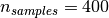 and 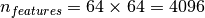, the computation time it less than 1s:
RandomizedPCA can hence be used as a drop in replacement for
PCA with the exception that we need to give it the size of
the lower-dimensional space n_components as a mandatory input parameter.
If we note 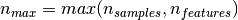 and
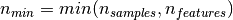, the time complexity
of RandomizedPCA is 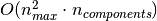
instead of  for the exact method
implemented in
for the exact method
implemented in PCA.
The memory footprint of RandomizedPCA is also proportional to
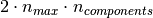 instead of 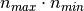 for the exact method.
Note: the implementation of inverse_transform in RandomizedPCA
is not the exact inverse transform of transform even when
whiten=False (default).
References:
2.5.1.4. Kernel PCA¶
KernelPCA is an extension of PCA which achieves non-linear
dimensionality reduction through the use of kernels (see 配对矩阵，类别以及核函数). It
has many applications including denoising, compression and structured
prediction (kernel dependency estimation). KernelPCA supports both
transform and inverse_transform.

Examples:
2.5.1.5. Sparse principal components analysis (SparsePCA and MiniBatchSparsePCA)¶
SparsePCA is a variant of PCA, with the goal of extracting the
set of sparse components that best reconstruct the data.
Mini-batch sparse PCA (MiniBatchSparsePCA) is a variant of
SparsePCA that is faster but less accurate. The increased speed is
reached by iterating over small chunks of the set of features, for a given
number of iterations.
Principal component analysis (PCA) has the disadvantage that the
components extracted by this method have exclusively dense expressions, i.e.
they have non-zero coefficients when expressed as linear combinations of the
original variables. This can make interpretation difficult. In many cases,
the real underlying components can be more naturally imagined as sparse
vectors; for example in face recognition, components might naturally map to
parts of faces.
Sparse principal components yields a more parsimonious, interpretable representation, clearly emphasizing which of the original features contribute to the differences between samples.
The following example illustrates 16 components extracted using sparse PCA from the Olivetti faces dataset. It can be seen how the regularization term induces many zeros. Furthermore, the natural structure of the data causes the non-zero coefficients to be vertically adjacent. The model does not enforce this mathematically: each component is a vector 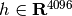, and there is no notion of vertical adjacency except during the human-friendly visualization as 64x64 pixel images. The fact that the components shown below appear local is the effect of the inherent structure of the data, which makes such local patterns minimize reconstruction error. There exist sparsity-inducing norms that take into account adjacency and different kinds of structure; see [Jen09] for a review of such methods. For more details on how to use Sparse PCA, see the Examples section, below.
Note that there are many different formulations for the Sparse PCA
problem. The one implemented here is based on [Mrl09] . The optimization
problem solved is a PCA problem (dictionary learning) with an
 penalty on the components:
penalty on the components:
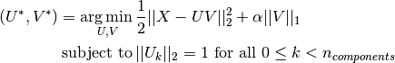
The sparsity-inducing norm also prevents learning
components from noise when few training samples are available. The degree
of penalization (and thus sparsity) can be adjusted through the
hyperparameter alpha. Small values lead to a gently regularized
factorization, while larger values shrink many coefficients to zero.
Note
While in the spirit of an online algorithm, the class
MiniBatchSparsePCA does not implement partial_fit because
the algorithm is online along the features direction, not the samples
direction.
Examples:
References:
| [Mrl09] | “Online Dictionary Learning for Sparse Coding” J. Mairal, F. Bach, J. Ponce, G. Sapiro, 2009 |
| [Jen09] | “Structured Sparse Principal Component Analysis” R. Jenatton, G. Obozinski, F. Bach, 2009 |
2.5.2. Truncated singular value decomposition and latent semantic analysis¶
TruncatedSVD implements a variant of singular value decomposition
(SVD) that only computes the  largest singular values,
where is a user-specified parameter.
largest singular values,
where is a user-specified parameter.
When truncated SVD is applied to term-document matrices
(as returned by CountVectorizer or TfidfVectorizer),
this transformation is known as
latent semantic analysis
(LSA), because it transforms such matrices
to a “semantic” space of low dimensionality.
In particular, LSA is known to combat the effects of synonymy and polysemy
(both of which roughly mean there are multiple meanings per word),
which cause term-document matrices to be overly sparse
and exhibit poor similarity under measures such as cosine similarity.
Note
LSA is also known as latent semantic indexing, LSI, though strictly that refers to its use in persistent indexes for information retrieval purposes.
Mathematically, truncated SVD applied to training samples  produces a low-rank approximation :
produces a low-rank approximation :
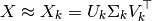
After this operation, 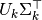
is the transformed training set with features
(called n_components in the API).
To also transform a test set , we multiply it with 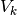:
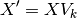
Note
Most treatments of LSA in the natural language processing (NLP)
and information retrieval (IR) literature
swap the axes of the matrix so that it has shape
n_features × n_samples.
We present LSA in a different way that matches the scikit-learn API better,
but the singular values found are the same.
TruncatedSVD is very similar to PCA, but differs
in that it works on sample matrices directly
instead of their covariance matrices.
When the columnwise (per-feature) means of
are subtracted from the feature values,
truncated SVD on the resulting matrix is equivalent to PCA.
In practical terms, this means
that the TruncatedSVD transformer accepts scipy.sparse
matrices without the need to densify them,
as densifying may fill up memory even for medium-sized document collections.
While the TruncatedSVD transformer
works with any (sparse) feature matrix,
using it on tf–idf matrices is recommended over raw frequency counts
in an LSA/document processing setting.
In particular, sublinear scaling and inverse document frequency
should be turned on (sublinear_tf=True, use_idf=True)
to bring the feature values closer to a Gaussian distribution,
compensating for LSA’s erroneous assumptions about textual data.
Examples:
References:
- Christopher D. Manning, Prabhakar Raghavan and Hinrich Schütze (2008), Introduction to Information Retrieval, Cambridge University Press, chapter 18: Matrix decompositions & latent semantic indexing
2.5.3. Dictionary Learning¶
2.5.3.1. Sparse coding with a precomputed dictionary¶
The SparseCoder object is an estimator that can be used to transform signals
into sparse linear combination of atoms from a fixed, precomputed dictionary
such as a discrete wavelet basis. This object therefore does not
implement a fit method. The transformation amounts
to a sparse coding problem: finding a representation of the data as a linear
combination of as few dictionary atoms as possible. All variations of
dictionary learning implement the following transform methods, controllable via
the transform_method initialization parameter:
- Orthogonal matching pursuit (Orthogonal Matching Pursuit (OMP) 正交匹配跟踪)
- Least-angle regression (Least Angle Regression最小角回归)
- Lasso computed by least-angle regression
- Lasso using coordinate descent (Lasso)
- Thresholding
Thresholding is very fast but it does not yield accurate reconstructions. They have been shown useful in literature for classification tasks. For image reconstruction tasks, orthogonal matching pursuit yields the most accurate, unbiased reconstruction.
The dictionary learning objects offer, via the split_code parameter, the
possibility to separate the positive and negative values in the results of
sparse coding. This is useful when dictionary learning is used for extracting
features that will be used for supervised learning, because it allows the
learning algorithm to assign different weights to negative loadings of a
particular atom, from to the corresponding positive loading.
The split code for a single sample has length 2 * n_components
and is constructed using the following rule: First, the regular code of length
n_components is computed. Then, the first n_components entries of the
split_code are
filled with the positive part of the regular code vector. The second half of
the split code is filled with the negative part of the code vector, only with
a positive sign. Therefore, the split_code is non-negative.
2.5.3.2. Generic dictionary learning¶
Dictionary learning (DictionaryLearning) is a matrix factorization
problem that amounts to finding a (usually overcomplete) dictionary that will
perform good at sparsely encoding the fitted data.
Representing data as sparse combinations of atoms from an overcomplete dictionary is suggested to be the way the mammal primary visual cortex works. Consequently, dictionary learning applied on image patches has been shown to give good results in image processing tasks such as image completion, inpainting and denoising, as well as for supervised recognition tasks.
Dictionary learning is an optimization problem solved by alternatively updating the sparse code, as a solution to multiple Lasso problems, considering the dictionary fixed, and then updating the dictionary to best fit the sparse code.
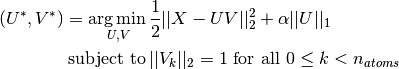


After using such a procedure to fit the dictionary, the transform is simply a sparse coding step that shares the same implementation with all dictionary learning objects (see Sparse coding with a precomputed dictionary).
The following image shows how a dictionary learned from 4x4 pixel image patches extracted from part of the image of Lena looks like.

References:
- “Online dictionary learning for sparse coding” J. Mairal, F. Bach, J. Ponce, G. Sapiro, 2009
2.5.3.3. Mini-batch dictionary learning¶
MiniBatchDictionaryLearning implements a faster, but less accurate
version of the dictionary learning algorithm that is better suited for large
datasets.
By default, MiniBatchDictionaryLearning divides the data into
mini-batches and optimizes in an online manner by cycling over the mini-batches
for the specified number of iterations. However, at the moment it does not
implement a stopping condition.
The estimator also implements partial_fit, which updates the dictionary by
iterating only once over a mini-batch. This can be used for online learning
when the data is not readily available from the start, or for when the data
does not fit into the memory.
Clustering for dictionary learning
Note that when using dictionary learning to extract a representation
(e.g. for sparse coding) clustering can be a good proxy to learn the
dictionary. For instance the MiniBatchKMeans estimator is
computationally efficient and implements on-line learning with a
partial_fit method.
2.5.4. Factor Analysis¶
In unsupervised learning we only have a dataset 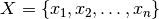. How can this dataset be described mathematically? A very simple
continuous latent variabel model for is
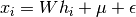
The vector  is called “latent” because it is unobserved.
is called “latent” because it is unobserved.  is
considered a noise term distributed according to a Gaussian with mean 0 and
covariance 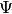 (i.e. 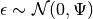),
is
considered a noise term distributed according to a Gaussian with mean 0 and
covariance 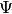 (i.e. 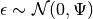),  is some
arbitrary offset vector. Such a model is called “generative” as it describes
how
is some
arbitrary offset vector. Such a model is called “generative” as it describes
how  is generated from . If we use all the ‘s as columns to form
a matrix
is generated from . If we use all the ‘s as columns to form
a matrix  and all the ‘s as columns of a matrix
and all the ‘s as columns of a matrix  then we can write (with suitably defined 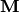 and
then we can write (with suitably defined 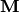 and  ):
):
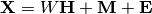
In other words, we decomposed matrix .
If is given, the above equation automatically implies the following
probabilistic interpretation:
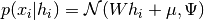
For a complete probabilistic model we also need a prior distribution for the
latent variable  . The most straightforward assumption (based on the nice
properties of the Gaussian distribution) is 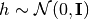. This yields a Gaussian as the marginal distribution of
. The most straightforward assumption (based on the nice
properties of the Gaussian distribution) is 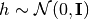. This yields a Gaussian as the marginal distribution of  :
:
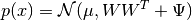
Now, without any further assumptions the idea of having a latent variable
would be superfluous – can be completely modelled with a mean
and a covariance. We need to impose some more specific structure on one
of these two parameters. A simple additional assumption regards the
structure of the error covariance :
- 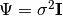: This assumption leads to
the probabilistic model of
PCA. - 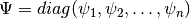: This model is called
FactorAnalysis, a classical statistical model. The matrix W is sometimes called the “factor loading matrix”.
Both model essentially estimate a Gaussian with a low-rank covariance matrix.
Because both models are probabilistic they can be integrated in more complex
models, e.g. Mixture of Factor Analysers. One gets very different models (e.g.
FastICA) if non-Gaussian priors on the latent variables are assumed.
Factor analysis can produce similar components (the columns of its loading
matrix) to PCA. However, one can not make any general statements
about these components (e.g. whether they are orthogonal):

The main advantage for Factor Analysis (over PCA is that
it can model the variance in every direction of the input space independently
(heteroscedastic noise):

This allows better model selection than probabilistic PCA in the presence of heteroscedastic noise:

2.5.5. Independent component analysis (ICA)¶
Independent component analysis separates a multivariate signal into
additive subcomponents that are maximally independent. It is
implemented in scikit-learn using the Fast ICA
algorithm. Typically, ICA is not used for reducing dimensionality but
for separating superimposed signals. Since the ICA model does not include
a noise term, for the model to be correct, whitening must be applied.
This can be done internally using the whiten argument or manually using one
of the PCA variants.
It is classically used to separate mixed signals (a problem known as blind source separation), as in the example below:

ICA can also be used as yet another non linear decomposition that finds components with some sparsity:
2.5.6. Non-negative matrix factorization (NMF or NNMF)¶
NMF is an alternative approach to decomposition that assumes that the
data and the components are non-negative. NMF can be plugged in
instead of PCA or its variants, in the cases where the data matrix
does not contain negative values.
It finds a decomposition of samples
into two matrices  and
and  of non-negative elements,
by optimizing for the squared Frobenius norm:
of non-negative elements,
by optimizing for the squared Frobenius norm:
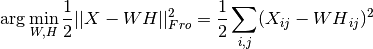
This norm is an obvious extension of the Euclidean norm to matrices. (Other optimization objectives have been suggested in the NMF literature, in particular Kullback-Leibler divergence, but these are not currently implemented.)
Unlike PCA, the representation of a vector is obtained in an additive
fashion, by superimposing the components, without subtracting. Such additive
models are efficient for representing images and text.
It has been observed in [Hoyer, 04] that, when carefully constrained,
NMF can produce a parts-based representation of the dataset,
resulting in interpretable models. The following example displays 16
sparse components found by NMF from the images in the Olivetti
faces dataset, in comparison with the PCA eigenfaces.

The init attribute determines the initialization method applied, which
has a great impact on the performance of the method. NMF implements
the method Nonnegative Double Singular Value Decomposition. NNDSVD is based on
two SVD processes, one approximating the data matrix, the other approximating
positive sections of the resulting partial SVD factors utilizing an algebraic
property of unit rank matrices. The basic NNDSVD algorithm is better fit for
sparse factorization. Its variants NNDSVDa (in which all zeros are set equal to
the mean of all elements of the data), and NNDSVDar (in which the zeros are set
to random perturbations less than the mean of the data divided by 100) are
recommended in the dense case.
NMF can also be initialized with correctly scaled random non-negative
matrices by setting init="random". An integer seed or a
RandomState can also be passed to random_state to control
reproducibility.
In NMF, L1 and L2 priors can be added to the loss function in order
to regularize the model. The L2 prior uses the Frobenius norm, while the L1
prior uses an elementwise L1 norm. As in ElasticNet, we control the
combination of L1 and L2 with the l1_ratio ( ) parameter,
and the intensity of the regularization with the
) parameter,
and the intensity of the regularization with the alpha
( ) parameter. Then the priors terms are:
) parameter. Then the priors terms are:
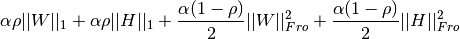
and the regularized objective function is:
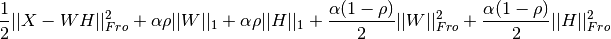
NMF regularizes both W and H. The public function
non_negative_factorization allows a finer control through the
regularization attribute, and may regularize only W, only H, or both.
Examples:
References:
- “Learning the parts of objects by non-negative matrix factorization” D. Lee, S. Seung, 1999
- “Non-negative Matrix Factorization with Sparseness Constraints” P. Hoyer, 2004
- “Projected gradient methods for non-negative matrix factorization” C.-J. Lin, 2007
- “SVD based initialization: A head start for nonnegative matrix factorization” C. Boutsidis, E. Gallopoulos, 2008
- “Fast local algorithms for large scale nonnegative matrix and tensor factorizations.” A. Cichocki, P. Anh-Huy, 2009
2.5.7. Latent Dirichlet Allocation (LDA)¶
Latent Dirichlet Allocation is a generative probabilistic model for collections of discrete dataset such as text corpora. It is also a topic model that is used for discovering abstract topics from a collection of documents.
The graphical model of LDA is a three-level Bayesian model:

When modeling text corpora, the model assumes the following generative process for
a corpus with  documents and
documents and  topics:
topics:
- For each topic
- For each document
, draw 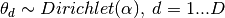
- For each word
in document
- Draw a topic index 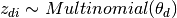
- Draw the observed word 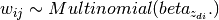
For parameter estimation, the posterior distribution is:
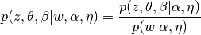
Since the posterior is intractable, variational Bayesian method
uses a simpler distribution 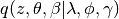
to approximate it, and those variational parameters  ,
,  ,
,
 are optimized to maximize the Evidence Lower Bound (ELBO):
are optimized to maximize the Evidence Lower Bound (ELBO):
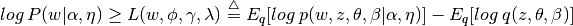
Maximizing ELBO is equivalent to minimizing the Kullback-Leibler(KL) divergence between 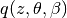 and the true posterior 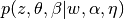.
LatentDirichletAllocation implements online variational Bayes algorithm and supports
both online and batch update method.
While batch method updates variational variables after each full pass through the data,
online method updates variational variables from mini-batch data points. Therefore,
online method usually converges faster than batch method.
Note
Although online method is guaranteed to converge to a local optimum point, the quality of the optimum point and the speed of convergence may depend on mini-batch size and attributes related to learning rate setting.
When LatentDirichletAllocation is applied on a “document-term” matrix, the matrix
will be decomposed into a “topic-term” matrix and a “document-topic” matrix. While
“topic-term” matrix is stored as components_ in the model, “document-topic” matrix
can be calculated from transform method.
LatentDirichletAllocation also implements partial_fit method. This is used
when data can be fetched sequentially.
References:
- “Latent Dirichlet Allocation” D. Blei, A. Ng, M. Jordan, 2003
- “Online Learning for Latent Dirichlet Allocation” M. Hoffman, D. Blei, F. Bach, 2010
- “Stochastic Variational Inference” M. Hoffman, D. Blei, C. Wang, J. Paisley, 2013